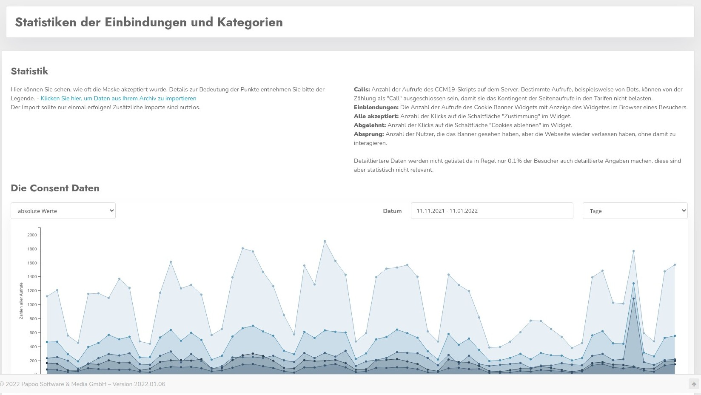
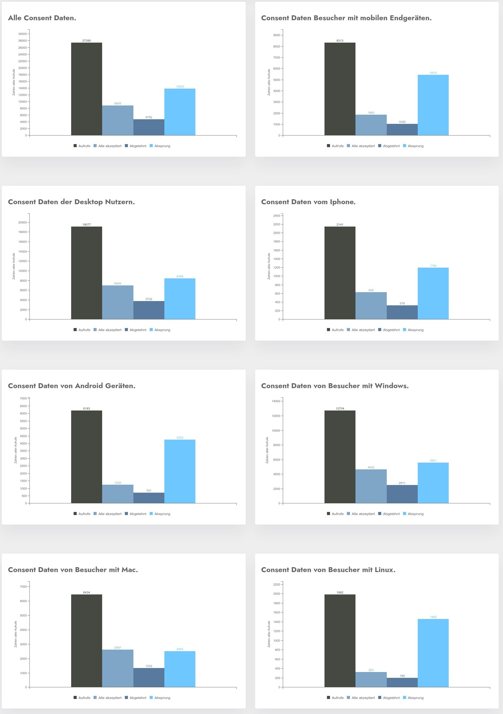

Mit Hilfe der erweiterten Statistik können Sie die statistischen Consent Daten weiter auswerten. Die Daten liegen hier vollständig anonymisiert vor - ein Rückschluß auf individuelle Datensätze ist nicht möglich.
Hier sehen Sie die Daten einer Beispielseite von einer unserer vielen Kundenseiten die uns freundlicherweise zur Verfügung gestellt wurden, es handelt sich hier um eine reine Infoseite aus dem Agrarbereich. Das ist aber für die Erläuterung der Oberfläche letztlich nicht relevant.

Oben links können Sie auswählen ob die Daten absolut - also die reinen Zahlen oder prozentual dargestellt werden sollen.
Die prozentualen Werte stehen aber für die Vergangenheit aber nur für einige kurze Zeiträume zur Verfügung da sehr lange nur die Zustimmungen geloggt wurden, aber keine Einblendungen. Die wurden jeweils nur für den jeweiligen Monat für die Abrechnung gezählt und dann verworfen wurden.
Wenn keine prozentualen Werte vorliegen, wird jeweils eine 0 angezeigt.
Sie können über die beiden Auswahlfelder oben rechts den Zeitraum auswählen und die Kummulation auf Tage, Wochen, Monate oder Jahre.
Prinzipiell ist es nun so dass die Zahl der Einblendungen sich aus allen Einblendungen der Maske berechnet, auch die Besucher die direkt wieder abspringen und die Maske nicht betätigen werden mit gezählt, außerdem alle die mit der Maske interagieren.
Die Zahl der Einblendungen ist nur eine Teilmenge der Zahl der Nutzungen von CCM19. Das Skript läuft bei jedem Seitenaufruf durch da immer überprüft werden muss ob ein Consent vorliegt oder nicht. Nur wenn kein Consent vorliegt wird die Maske ausgegeben und es kommt zu einer Zählung in der obigen Anzahl der Einblendungen.
Detailliertere Daten werden nicht gelistet da in Regel nur 0,1% - 1% der Besucher auch detaillierte Angaben machen, diese sind aber statistisch nicht relevant.
Mitunter kann es zu Problemen bei der Verarbeitung der Daten kommen, klicken Sie dann auf den Link "Daten aus dem Archiv importieren". Dieses Probleme treten aber wenn dann nur in den Download Versionen auf.
Da diese Daten ohnehin immer übermittelt werden, kann man diese auch problemlos darstellen und auswerten. Ein DSGVo / Personenbezug existiert nicht.
